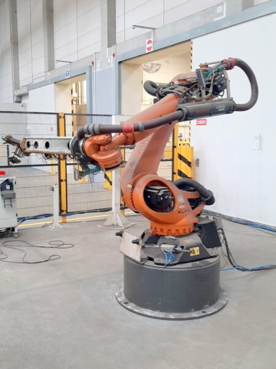
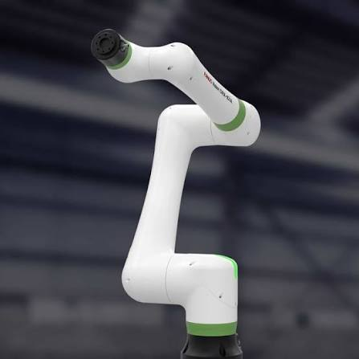
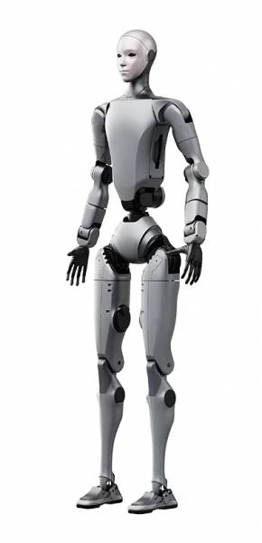
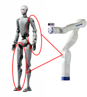

ENG-654
Kinematics Grounded Motion Planning of Robots
Durgesh Salunkhe
Robots are everywhere
Robot architectures have diversified enormously, but their motion is still governed by the geometry of links, joints, and constraints.

Industrial robots
High speed, repeatability, and payload.

Collaborative robots
Designed for flexible human–robot workspaces.

Humanoid robots
Highly articulated systems operating in human environments.
Complex robots are built from simpler mechanisms
Behind every robot is an arrangement of rigid links connected through joints.
These arrangements can often be understood using two fundamental architectures:
- serial kinematic chains
- parallel kinematic mechanisms
